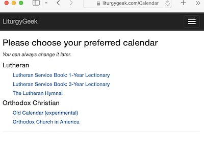
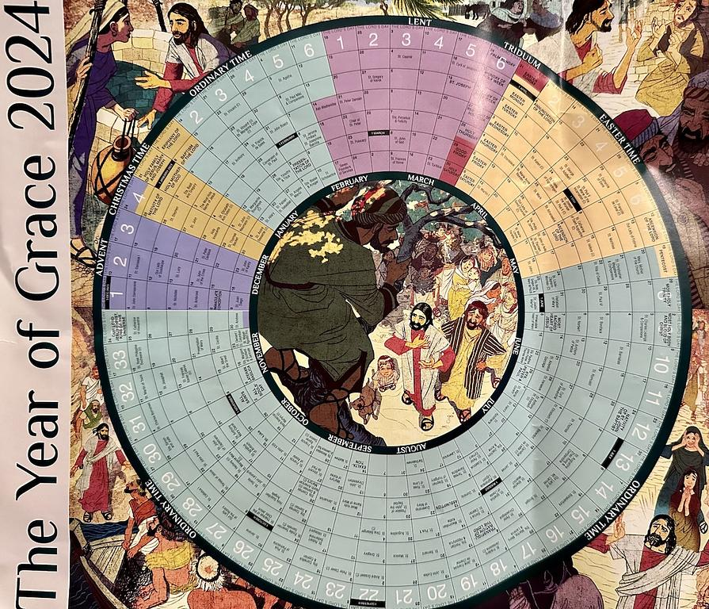

Today is the first day of Advent, but the third day of Advent of Code (AoC). I'm not doing AoC this year, but I am doing something involving both Advent and Code, which is to extend Kaleb Axon's LiturgyGeek to include the Roman Catholic liturgical calendar.

liturgygeek.png47.6 KB This is my first time fully participating in the liturgical year since becoming a catechumen, so I have a lot of learning to do. My favorite way to learn about a new topic, besides reading and talking to people who know more than me, is to write code to implement the new ideas I'm learning. In college I would write Mathematica and C++ code when learning about a new branch of math, or I'd write programs to do simulations in physics for my physics classes.
Structure of the LiturgyGeek repo
In case anyone else is interested, here's the basic structure of the repo, and how the liturgical calendar is computed:
LiturgyGeek.Tools/Sources/occasions.txt (codes for feast days, saints, etc.)
LiturgyGeek.Api (defines the API for the backend web server)
LiturgyGeek.Ng (defines the Angular.JS frontend web app)
LiturgyGeek.Calendars (defines the main ChurchCalendar abstraction and time logic)
ChurchCalendar.cs
has a TraditionCode (e.g. Easter Orthodox)
has a CalendarCode (e.g. OCA)
The Engine namespace contains
CalendarReader: for reading calendar definition files
CalendarEvaluator: for evaluating/calculating calendar dates and
CalendarYearBuilder: for building calendar years
The Dates namespace has classes representing different kinds of date calculations like FixedDate and MovableDate
LiturgyGeek.Data (handles database interaction)
I work mostly on my M1 Mac and on my Linux servers through ssh, so I can't build this repo right now, my Windows machine is in my office and it's sunday. But I have a good high-level overview of the LiturgyGeek code and a decent plan of action for Monday night. I also wanted to share this for anyone interested in forking and adding their tradition's liturgical calendar to the project.
After mass today I got this beautiful printed liturgical calendar from my church:

2024.jpg743 KB
One parting thought I'll share with my audience here: an obsession with time is the thing which lead me to come to believe in God. So I believe it's appropriate to work on Sunday if it's toward honoring the keeping of time for liturgical purposes. I'll share that story later, for now, I hope this has been helpful or inspiring in some way.